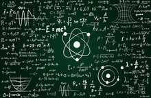
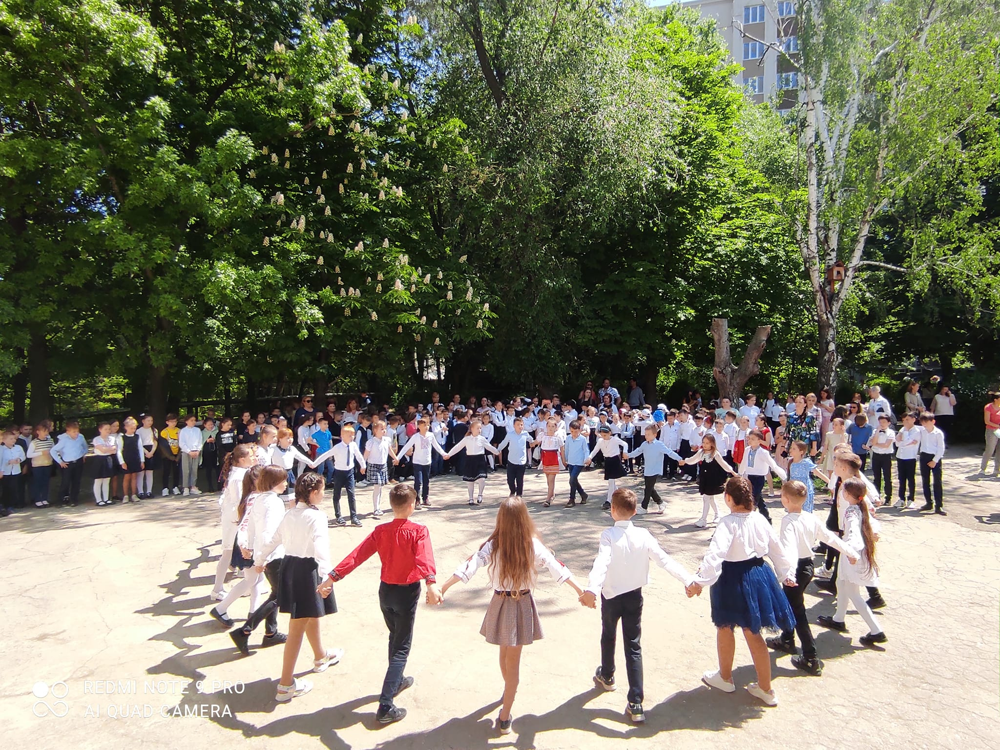

Noutăți
Fizica e foarte importantă!
20/05/2022 Cu pasiune despre Fizică... Elevii clasei a VI- a din Liceul Teoretic "Pro Succes" au participat la Concursul de Fizică „În memoriam Mihai Marinciuc”, ediția a XI-a, organizat de către Universitatea Tehnică a Moldovei și Asociația Obștească ICAR, la care au obținut următoarele performanţe: Muntean Loredana - locul II; Rotaru Adina - mențiune; Cuciuc Alexandra- mențiune. Felicitări, dragi elevi! Felicitări și recunoștință pentru dedicație domnului Gorincioi Oleg, profesor de Fizică!
Cartea e izvorul cunoștințelor
12/05/2022Creşterea academică, apreciată de către Ministerul Educaţiei şi Cercetării... Absolvenţii de la Liceul Teoretic "Pro Succes" şi- au demonstrat cunoştinţele şi capacităţile în cadrul Olimpiadelor la disciplinele şcolare, anul de studii 2021-2022. Astfel, Egor Caraulan, absolventul clasei a XII-a, este deţinătorul Locului Întâi la Olimpiada Republicană, disciplina Limba Rusă şi, de asemenea, colega lui, Ruxandra Susanu, a obţinut Locul III în cadrul Olimpiadei Republicane la Istorie! Felicitări Profesorilor şi Laureaţilor! Succese Mari şi realizări frumoase!!!
Tradiții și valori!
26/04/2022 Liceul "Pro Succes" dintotdeauna a fost şi este lăcaşul tradiţiilor frumoase. Astfel, s-a desfăşurat activitatea de bilanţ a Cercurilor pe interese, ediţia 2022! Artele si Sportul într-un tandem nemaipomenit au creat voia bună şi dispoziţia printr- un colaj de cântece, dansuri naţionale şi moderne, elemente de gimnastică artistică şi acrobatică în perechi, toate prezentate de către elevii de la treapta Primară. Surpriza Zilei a fost Competiţia sportivă " Starturi Vesele" dintre Echipa Profesorilor şi a Elevilor din clasa a XII- a! Cine au fost învingătorii? A învins Voia Bună şi Prietenia!!!